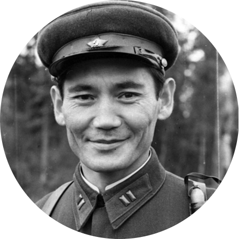

|  |
Бауыржан МомышұлыКеңес одағының батыры, жазушы Екінші дүниежүзілік соғыстың даңқты жауынгері Әскери қолбасшы, стратег және тактик |
Батыс майданындағы 16 армияның 316 (1941 жылдың қарашасынан бастап 8-гвардиялық Қызылту атқыштар дивизиясы 1073 атқыштар полкінің (1941 жылдың қарашасынан 19 Гвардия полкі) және батальон командирі. Ұлы Отан соғысына генерал-майор И.В. Панфилов басқарған әйгілі дивизиясының құрамында 1941 жылдың қыркүйек айынан бастап қатысты. Батальон командирі ретінде аға лейтенант Бауыржан Момышұлы Мәскеу үшін шайқаста 207 рет ұрысқа қатысты. 1941 жылдың 16-18 қараша күндері вермахтың Мәскеу бағытында екінші мәрте жасаған жорығы кезінде аға лейтенант Момышұлы басқарған батальон дивизиядан қашықта, Матронино деревнясының жанында Волоколамск тасжолында асқан ерлікпен ұрыс жүргізді. Білікті комбаттың басшылығы арқасында 3 күн бойы фашистер шабуылын тойтарып, батальон үлкен шығынсыз, ұрысқа қабілетті жағдайда қоршаудан шығады
| Лақап аты | Шаң тимес |
|---|---|
| Туған күні | 24 желтоқсан 1910 |
| Туған жері | Көлбастау, Жуалы ауданы, Жамбыл облысы |
| Қайтыс болған күні | 10 маусым 1982 (71 жас) |
| Қайтыс болған жері | Алматы, ҚазКСР |
| Атағы | Гвардия полковнигі |
Шығармалары
|
|